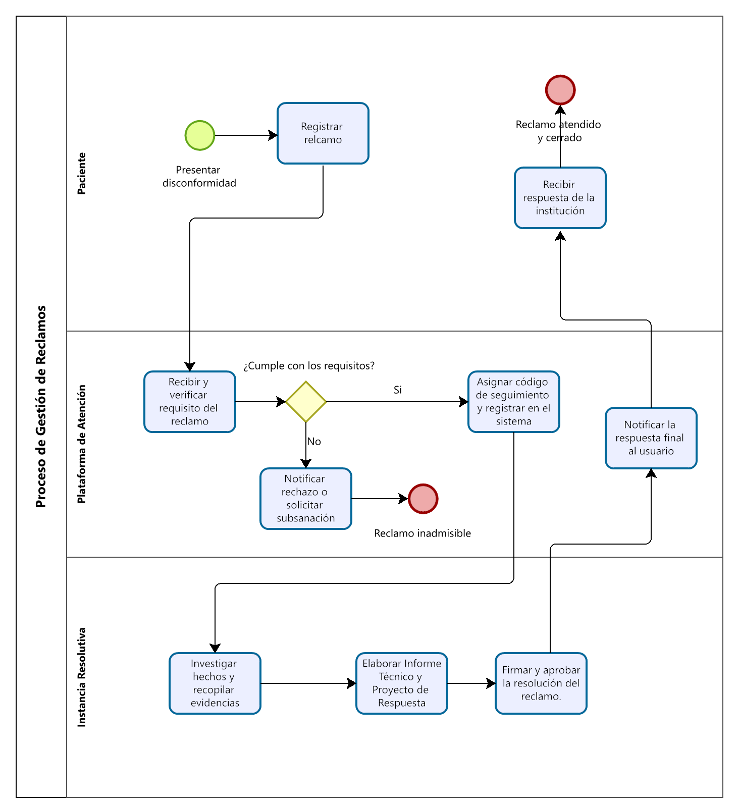

Consulta los diagramas de procesos institucionales de la Red Integrada de Salud Pacífico Norte.
Flujo del proceso de reclamos por los usuarios, desde su recepción hasta la emisión de la respuesta correspondiente, garantizando el cumplimiento de los procedimientos institucionales establecidos.

Documento normativo que sustenta y regula el procedimiento institucional para la atención de reclamos y denuncias.